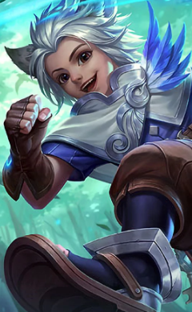

Легенди свідчать, що у Зачарованому Лісі на Землях Світанку проживає давня раса ельфів. В історіях представників цієї котячої раси зображують маленькими, рухливими, грайливими, незалежними та дуже розумними. Проте мало хто знає про давній Союз між ельфами Леоніна та Місячними Ельфами.
З малих років Харит перевершував однолітків у таланті та мудрості. Він швидко став найсильнішим магом серед Леонінів, можливо настільки ж сильним, як інші маги Земель Світанку. Але Леоніни ніколи не виходили за межі Зачарованого Лісу, живучи відокремлено та мирно, самі по собі. Вони так звикли до блаженного існування, що більше не цікавилися мистецтвами магії, рисою цієї раси. Все це не подобалося Хариту і він вирішив залишити Зачарований Ліс у віці 15 років. Харит був відомий амбіціями та пристрастю до мистецтва магії і прагнув стати лідером свого народу.
Харит прибув до столиці Земель Світанку і вступив до загону людей, що борються з орками-загарбниками. Показавши себе в битві, він був помічений Тигрилом, захопивши його бойовим духом та видатними здібностями. Люди казали, що Харит отримав звання лейтенанта і незабаром буде призначено як Імператорський Майстер Магії Монійської Імперії. Це означало, що Харит має імперський дозвіл використовувати магію для управління простором і часом, щоб розкрити Таємниці Світанку. З того часу Харит з гордістю служив в експедиції через Землі Світанку, щоб запечатати зло і захистити справедливість.
Повний азарту і запалу, Харит також знав, що як він отримає звання магістра магії, він стане об'єктом публічної критики. Будучи відданим своїй мрії стати лідером свого народу в магії, Харит безстрашно рушив уперед один. Згодом і Харит виявив, що його життя було поглинене місією та імперією. Харит повільно ставав самотнім і невловимим. Навіть коли він зустрічався зі своїм другом Леоніном, Наною, він не міг запровадити нормальну розмову. Незважаючи на те, що Нана виявляла ознаки прихильності до нього, він не міг висловити свої почуття, вважаючи, що найкращий спосіб захистити її від критики – це бути одному. Зрештою, щоразу, коли Імперія потребувала магічної допомоги, Магістр магії виконував завдання, щоб викорінити зло.
| Ключова інформація | Харит отримує осяяння від свого ключа. Він негайно зменшує тривалість негативних ефектів до 45% (залежно кількості найближчих ворожих героїв). | |
| Поділ Часу | Харит створює свій Фантом у протилежному напрямку і випускає поділ часу, завдаючи 145 (+70% загальної магічної сили) одиниць магічної шкоди всім ворожим юнітам на шляху. | |
| Тимчасовий удар | Харит кидається у вказаному напрямку. Після прибуття, він краде магічну атаку найближчих ворожих героїв, генерує щит, який поглинає щонайменше 150 (+150% загальної магічної сили) одиниць урону і посилює його наступну базову атаку. Посилені базової атаки Харита завдають 200 (+80% загальної магічної сили) одиниць магічного урону і уповільнює ворогів на 40%. Поразка ворога базовою атакою Харита, скорочує перезарядку наступного тимчасового удару на 3 секунди. | |
| Сила Часу | Харит використовує свій ключ, щоб викликати силу часу. Коли з'являється багатовимірний розкол, час перезаряджання наступного тимчасового удару скоротиться на 4 секунди. Потім розкол уповільнює ворогів поблизу на 35% протягом деякого часу. (Якщо Харит вступає в контакт з розколом при використанні тимчасового удару, він поглине енергію всередині нього, щоб зменшити час перезаряджання наступного поділу часу/тимчасового удару на 1 секунду/3 секунди, відповідно). |
Харит
Мандрівник у Часі